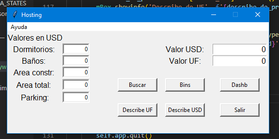

Acerca de los datos
Los datos fueron obtenidos de la plataforma de Kaggle una fuente gratuita encargada de suministrar datos de prueba, en los cuales se recogieron datos que influyen en el precio de las casas en una localidad dada. Este codigo estará acompañado de un programa capáz de estimar el precio de estas casas partiendo de datos conocidos a travez de una interfaz gráfica. Para esto debemos de conocer la siguientes características:
- Dormitorios
- Baños
- Parkings
- Área disponible
- Área total
Librerías utilizadas
Desktop
Vista de la ventana principal
La ventana muestra una barra de titulo con el nombre del programa, luego un menu donde se pueden visualizar los gráficos de densidades de exactitud y scores los campos de texto y entrada correspondientes a cada variable y los botones funcionales. El programa se encuetra protegido contra la estimación de valores negativos en los precios mostrando así un mensaje de error como se muerte a continuación.
Buscar
Descripción de precios UF
Descripción de precios USD
Dash
Utilizando dash se puede crear un panel donde se muestra el ascenso de los precios totales de las ventas de casas por dormitorios, y se puede llagar a la conclusión de que las casas más vendidas fuero las de 4 dormitorios.
Menú
En el apartado del menu se puede ver la opcion vistas donde se muetra en formato html las gráficas de densidades.
El grafico de densidad muestra una aproximación de los datos reales contra los datos predecidos.
El grafico de scores muetra los scores dentro de la función de cross_val_predict.